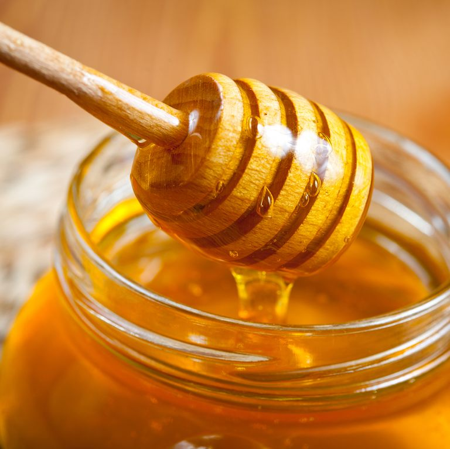

[세로 직캠] 아이유 - 미공개곡 (IU - FAN CAM) [유희열 없는 스케치북] [You Heeyeol’s Sketchbook] 20200919)
조회수 236,843회 ' 2020. 9. 21.
KBS Kpop구독자 572만명
[세로 직캠] 아이유 - 미공개곡 (IU - FAN CAM) [유희열 없는 스케치북]
댓글 455개

김승환3개월 전
노래제목으로 '새벽에 피는 꽃' 아니면 '나팔꽃' 추천해요! 흔히 나팔꽃은 새벽에 피어서 해가 뜨면 진다고 하잖아요. 찾아보니 영어로는 morning glory 꽃말은 좋은소식이라네요! 골목길 담장에 피어있는 보라색꽃이 가사를 보면 떠오르는것 같아요 나팔꽃이 아무도 없는 새벽에 말려있던 꽃잎이 피어나지만 해가뜨면 다시 동그랗게 말리는게 나는 그래도 이자리에 계속있으니 그대 울지마시오 하는 가사와도...
김난영3개월 전
이것도 또 음원나올때까지 여기로 출근하게 생겼네......
미공개곡들 한번씩 불러주면 너무 좋은데 음원이 없어서 유튭에서 찾아봐야 되는게 너무 아쉬움 ㅠㅠ